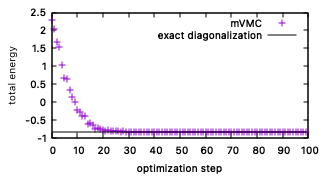
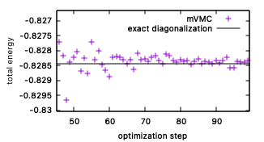

1.1. Hubbardダイマー¶
このチュートリアルでは、ハーフフィリングにおけるHubbardダイマーの基底状態と励起状態のエネルギーを計算します。
文献2に記載されているように、Hubbard dimerの基底状態 \(|{\rm GS} \rangle\) は、
を用いると、次のように表されます。
ここで \(|0 \rangle\) は真空状態を表しています。上記の状態はmVMCで実装されているペアリング波動関数で厳密に表現することができます。
1.1.1. 波動関数の最適化¶
1.1.1.1. スタンダードモード¶
インプットファイル samples/tutorial_1.1/stan1.in を使って、基底状態のエネルギーを計算します。
中身は次のようになっています:
L = 2
Lsub = 2
model = "FermionHubbard"
lattice = "chain"
t = 0.5
U = 4.0
ncond = 2
NSPGaussLeg = 1 //default:8
2Sz = 0
NSROptItrStep = 100
NSROptItrSmp = 10
NVMCSample = 100
次のコマンドでmVMCを実行してください。
vmc.out -s stan.in
計算結果は、 output ディレクトリに出力されます。
エネルギーの最適化過程を確認するために、 output/zvo_out_001.dat を確認してみます。このファイルには、各最適化ステップごとにエネルギーなどの物理量が記載されています。エネルギーは一列目に出力されています。次のコマンドを実行してください:
gnuplot plot
実行すると、下記のようなグラフが表示されます。
紫の点がmVMCによるエネルギーの最適化過程を、黒の実線がHPhiを用いた厳密解の結果を示しています。ちゃんと収束していることを確認するには、最後のステップ数付近を拡大してみてください。モンテカルロサンプルリングをしているためエネルギー値に揺らぎがありますが、下記のようにエネルギーが落ち着いていたら収束しているといえます。
1.1.1.2. エキスパートモード¶
Hubbard模型を含んだ遍歴電子系をスタンダードモードで取り扱う場合、指定した副格子構造を有したGutzwiller-Jastrow相関因子がデフォルトで使用されます。ここではスタンダードモードで生成した入力ファイルを元に、相関因子を用いないmVMC計算をエキスパートモードで実行します。
スタンダードモードで生成された入力ファイル namelist.def には、次のようにキーワードに対応したファイル名が記載されています。:
ModPara modpara.def
LocSpin locspn.def
Trans trans.def
CoulombIntra coulombintra.def
OneBodyG greenone.def
TwoBodyG greentwo.def
Gutzwiller gutzwilleridx.def
Jastrow jastrowidx.def
Orbital orbitalidx.def
TransSym qptransidx.def
相関因子を使わないようにするには、GutzwillerとJastrowの行をコメントアウトする、もしくは削除する必要があります。(コメントアウトには#を用います。)
たとえば次のようなsedコマンドを使うと、 namelist.def 中のGutzwillerとJastrowの行をコメントアウトできます:
sed -i -e "s/Gutzwiller/#Gutzwiller/" namelist.def
sed -i -e "s/Jastrow/#Jastrow/" namelist.def
namelist.def を修正したら、:
vmc.out -e namelist.def
もしくは:
vmc.out namelist.def
を実行してください。計算が終了したら、スタンダードモードの時と同様にエネルギーの最適化過程を確認し、エネルギーが一定値に収束していることを確認してください。
最適化されたペアリング波動関数の情報は、output/zqp_orbital_opt.dat に出力されています。次のコマンドを実行してください:
cat output/zqp_orbital_opt.dat
結果は、大まかに次のようになっているかと思われます。:
======================
NOrbitalIdx 4
======================
======================
======================
0 -1.653588951124364659e+00 0.000000000000000000e+00
1 -3.983375054723054198e+00 0.000000000000000000e+00
2 -4.000000000000000000e+00 0.000000000000000000e+00
3 -1.653364791408409529e+00 0.000000000000000000e+00
5行目のヘッダ以降の数値が、最適化されたペアリング波動関数の情報です。一列目が変分パラメータのインデックス、二列目が変分パラメータの実部、三列目がその虚部です。今回は実数での計算になっているため、三列目は全て0が出力されています。なお、ここで出力されている値は、最適化の最終ステップから NSROptItrSmp ステップ数分前までの変分パラメータの平均値となっています。( NSROptItrSmp は modpara.def で設定できます。)
変分パラメータのインデックスとペアリングの関係は、 orbitalidx.def に記載されています。次のコマンドを実行してください:
cat orbitalidx.def
すると次のような出力が得られます。:
=============================================
NOrbitalIdx 4
ComplexType 0
=============================================
=============================================
0 0 0
0 1 1
1 0 2
1 1 3
0 1
1 1
2 1
3 1
5行目のヘッダ以降の数値が、ペアリング波動関数 \(\left(\sum_{i,j} f_{ij} c^{\dagger}_{i\uparrow} c^{\dagger}_{j\downarrow}\right) | 0 \rangle\) に含まれる変分パラメータ \(f_{ij}\) の情報です。一列目が変分パラメータ \(f_{ij}\) の サイトインデックス \(i\) 、二列目が \(f_{ij}\) の \(j\) 、三列目が \(f_{ij}\) のインデックスです。
基底状態の厳密解 (1.3) によると、ペアリング波動関数の変分パラメータは次のようになることが期待されます。
上記の関係式を満たすよう変分パラメータが最適化されていそうかを確認してください。たとえば、 bc -l コマンドを使うと下記のように簡単に確認できます。:
$bc -l
>>> a=1/sqrt(2)
>>> sqrt(1-a)/sqrt(1+a)
.41421356237309504880
>>> -1.653588951124364659/-3.983375054723054198
.41512258534724672475
1.1.1.3. 演習¶
ハーフフィリングにおけるHubbard dimerの基底エネルギーの厳密解は \(E=\frac{U}{2}\times(1 - \sqrt{(1+(4t/U)^2)})\) となります。mVMCのスタンダードモード用の入力ファイル samples/tutorial_1.1/stan1.in を参考にして、厳密解の相互作用Uを再現できるか確かめてください。
1.1.2. 初期状態の設定¶
全スピンの大きさ \(S_{\rm tot}\) が0の場合、一番エネルギーが高い励起状態 \(|{\rm ES} \rangle\) とそのエネルギー \(E_{{\rm ES}}\) は次のように表されます。
ここでは、励起状態 (1.5) を初期状態として使って、基底状態最適化を行なってみます。これまでの計算では、変分パラメータ \(f_{ij}\) の値を指定せずにmVMCを実行していました。指定しない場合、 \(f_{ij}\) は乱数が自動的に振られるように実装されています。
今回のチュートリアルのように、ペアリング波動関数の初期状態を設定するためには、 namelist.def に InOrbital キーワードを追加してください。たとえば基底状態の最適化で得られた zqp_orbital_opt.dat を流用すると、次のような最適化過程を得られます。
紫のデータ点がmVMCの最適化過程を、黒実線が厳密解のエネルギーを示しています。正しく設定できていると、最適化過程の初めのエネルギーが励起状態のエネルギーに近い値になっていることが確認できます。なお、初期状態が励起固有状態に近いほど、最適化過程では励起状態にトラップされてしまい、基底状態には収束しづらくなります。
1.1.2.1. 演習¶
上述の説明やマニュアルを参考に、 準安定な励起状態を作ってみてください。
1.1.3. 参考文献¶
HPhi tutorial, https://issp-center-dev.github.io/HPhi/manual/develop/tutorial/en/html/zero_temperature/hubbard_dimer.html
高田康民, 多体問題特論 --第一原理からの多電子問題--, 朝倉書店 (2009).

{kind=link}
{kind=link}
{kind=link}